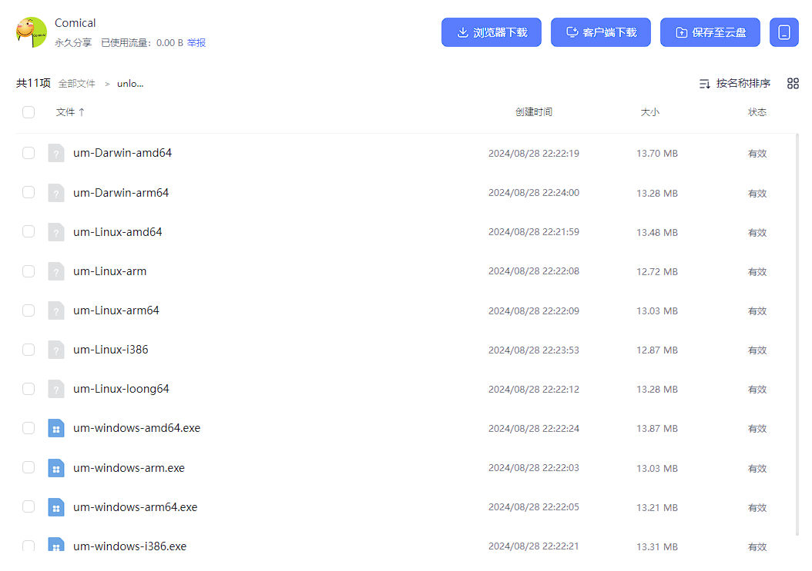
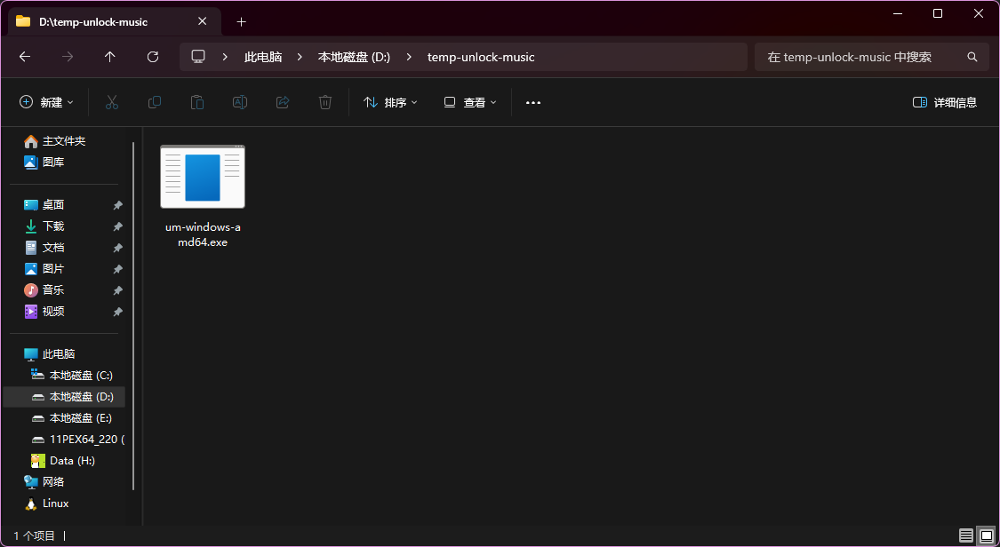
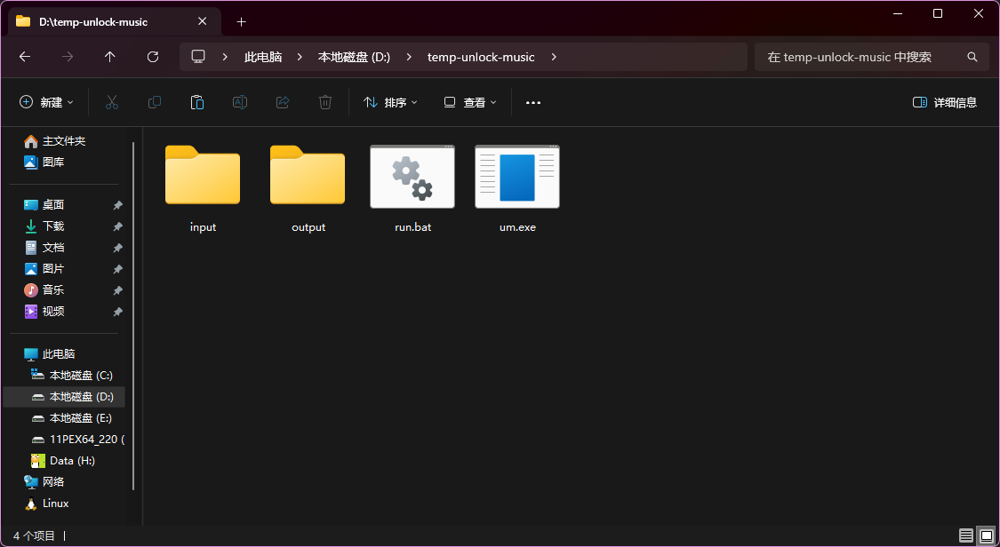
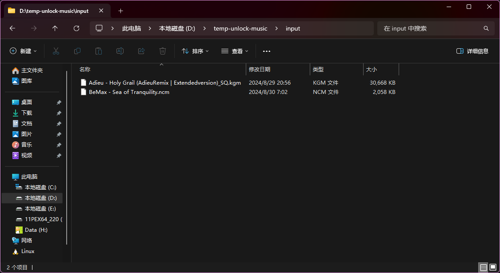
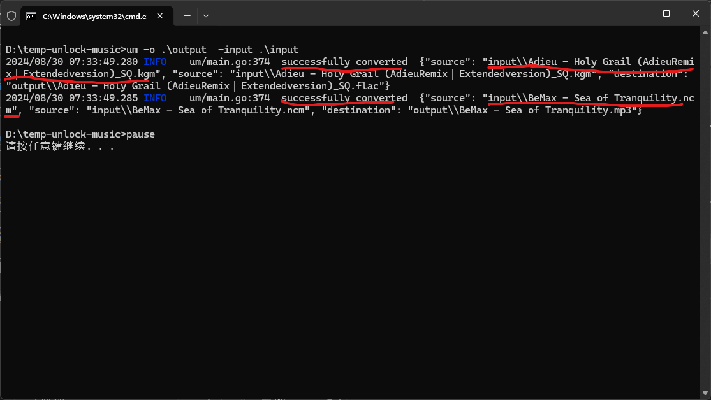
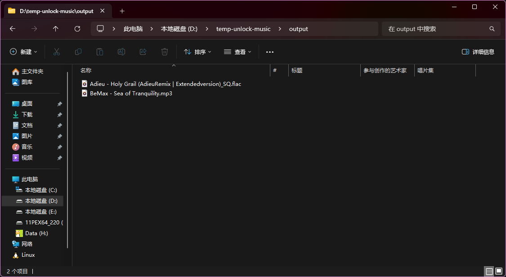

UnlockMusic-CLI
下载链接

介绍：使用命令行进行音乐解锁，适合离线大批量解锁
演示

使用方法：
1.在上方链接下载适合自己系统的um可执行文件
2.在合适的地方新建文件夹，将下载的文件放进去
3.重命名文件为um.exe（其他系统视情况而定）新建input文件夹，output文件夹，run.bat文件（新建文本文档打开后缀直接重命名全选修改）
4.选中run.bat，右键选择编辑，将以下命令复制到编辑窗口，保存后退出
um -o .\output -input .\input
pause
5.根据平台将加密音乐的后缀名进行修改（如酷狗下载大多数为.kgm.flac文件，全部改为.kgm即可）
建议搭配ReNamer重命名软件，支持格式：
QQ 音乐 (.qmc0/.qmc2/.qmc3/.qmcflac/.qmcogg/.tkm)
Moo 音乐格式 (.bkcmp3/.bkcflac/...)
QQ 音乐 Tm 格式 (.tm0/.tm2/.tm3/.tm6)
QQ 音乐新格式 (.mflac/.mgg/.mflac0/.mgg1/.mggl)
QQ 音乐海外版JOOX Music (.ofl_en)
网易云音乐格式 (.ncm)
虾米音乐格式 (.xm)
酷我音乐格式 (.kwm)
酷狗音乐格式 (.kgm/.vpr) (CLI 版本)
6.将改名后的文件放入刚才创建的input文件夹，双击运行刚刚创建的run.bat文件，解锁成功的曲子会显示successfully converted
 7.进入创建的output文件夹，里面就是解锁完成的音乐
